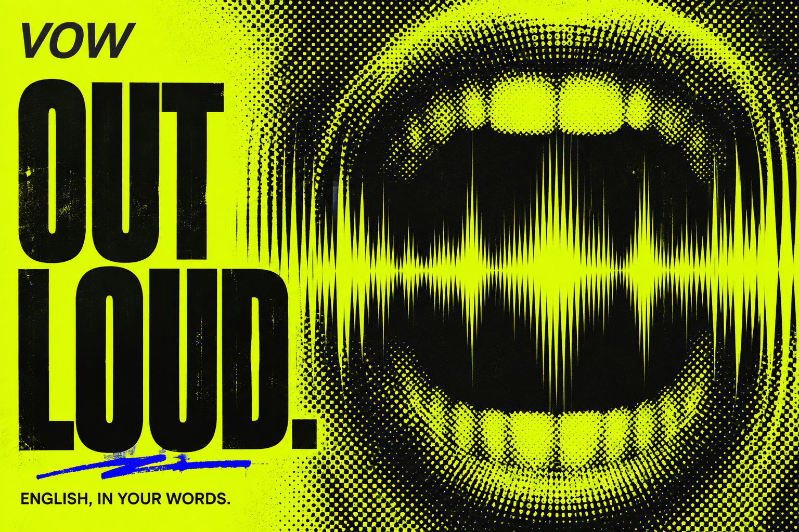
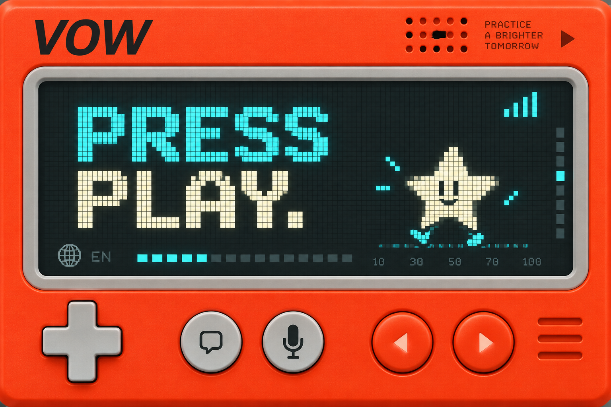
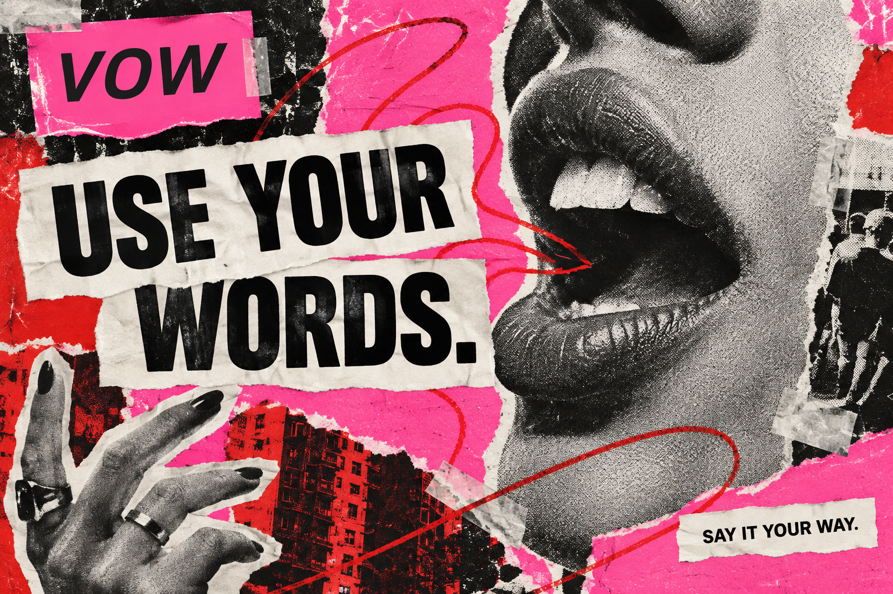
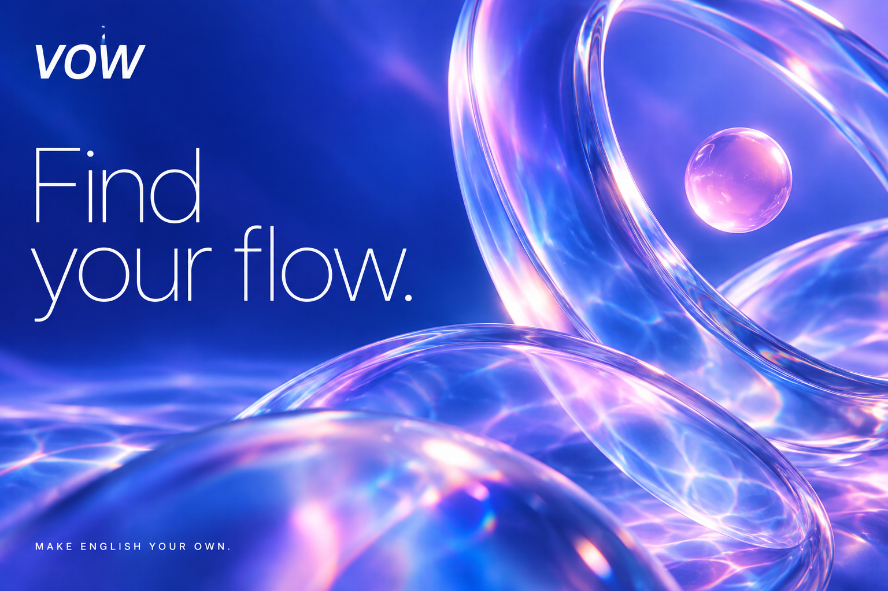

D / ACID VOICE 音楽・クラブカルチャー蛍光色、極端な文字の大小、網点と波形。英語を声に出すことを、勢いのある自己表現として見せる。参照：Supreme Radio · ドットのグラフィック
E / PLAY MODE レトロなゲーム機オレンジの筐体、ドット表示、大きなボタン。毎日の練習を、小さな機械を起動して遊ぶ感覚へ。参照：Mind The Lap · TRS の探索
F / CUT & SAY 手作りの ZINE切り貼り、写真の断片、赤い書き込み。言葉を自分のものにする自由さと、人の気配を強く出す。参照：The Interface / Offmenu · ULTRA
G / DREAM POP 透明感と没入深い青、ラベンダー、ガラスの屈折。画面全体を一つの空間として、言葉が流れ出す感覚へつなげる。参照：Studio Sphere · logo treats